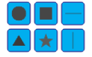
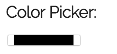
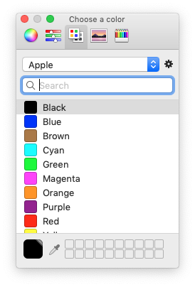
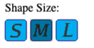
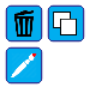
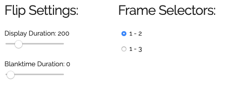

Placing Objects
To place an object, you simply need to select which object from the shapes library you would like to place. You can do so by clicking one of the respective buttons, shown below.

Upon selecting a shape, the button for that shape will remain pressed: it functions as a toggle. This is because after pressing it you are able to place a shape as many times as you want. To end this function, you can either select another shape's button, any of the modification buttons, or start dragging an already-placed shape.
Selecting a Color
You can modify the colors by using the Color Picker towards the top of the page. This allows you to select the current color to work with: this color is used when creating new objects and when repainting existing ones.
NOTE: This color picker is an HTML5 element and is best used on modern browsers. Older browsers such as Internet Explorer 11 will not properly render this element. It will vary depending on what browser and device you are using.
The photo below is of the Color Picker in Firefox 68.0.2 on Mac OS Mojave 10.14.6.


On some devices there may not be an "Enter", "Set", or "Confirm" button in the system's Color Picker. In those cases, you may have to Double Click the desired color to confirm it. On Mac OS Mojave 10.14.6, you only need to select the color in the system's Color Picker window with no confirmation necessary.
Selecting a Size
The shapes you create can have 1 of 3 sizes. The currently selected size will always appear pressed. To change the size of new shapes you can select from the bank of buttons shown below:

Modifying & Deleting

The Delete Button is the button with a Trash Can icon in the button bank shown above. ONce selected, you can click any shape you would like to delete.
The Copy Button allows you to copy objects to other frames. Once selected, you can click any object to copy it to the other two frames.
The Repaint Button allows you to change the color of existing objects. Once selected, you can repaint objects with the color currently selected in the Color Picker by clicking on them.
All of these buttons will remain pressed after being selected, as they are toggles. To turn one off, either select another or select the button again. They cannot be used simutaneously.
Extra Functions
The Ghost Button allows you to see the outline of other shapes within the other frames. For example, you will see the the outline of objects from Frame 3 in Frames 1 and 2.
The Grid Button lays a 3x3 grid within each frame to help coordinate the placement of objects.
Both are toggles and can be used simutaneously. To turn them on/off just click the button to toggle their state.
Flipping the Frames

First, adjust the Flip Settings shown above. The Display Duration slider adjusts how long each fram remains on the screen (in milliseconds). The Blanktime Duration Slider adjusts how long white-space is shown inbetween frames (in milliseconds).
The Frame Selector Radio Buttons tell the application what frames to flip between. The options available are: Between Frames 1 & 2, or between Frames 1, 2, and 3.
To start/stop the flipping of frames, press the Start Flip Button. While the flipping is active, the button will remain pressed. To stop the flipping of frames press the Start Flip Button again.
Modeling Motion
Those instructions go here.